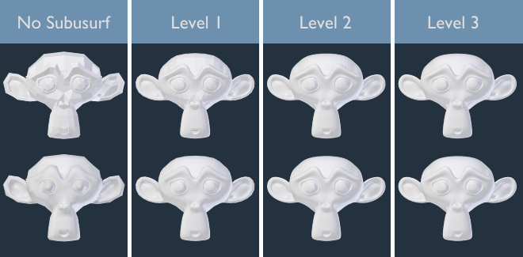
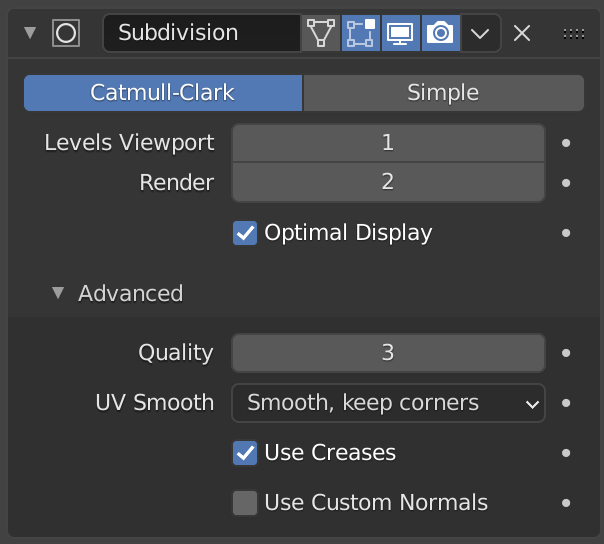
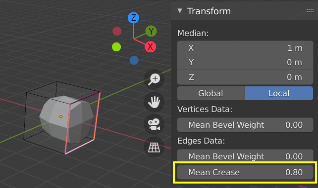
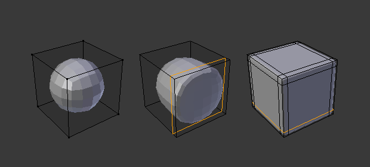
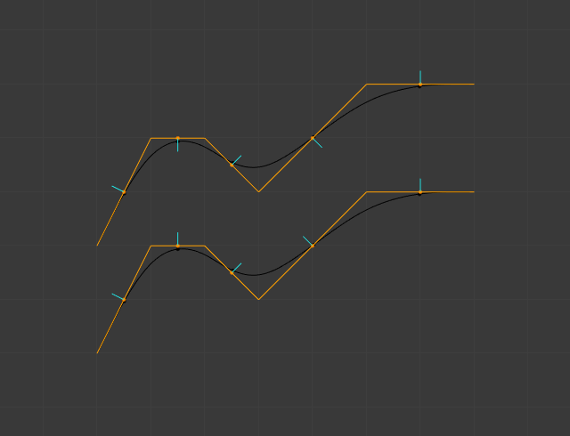

Modifier Subdivision Surface¶
Modifier Subdivision Surface (thường được gọi tắt một cách thân mật là "Subdiv" hoặc "Subsurf") được dùng để chia các face của một mesh thành những face nhỏ hơn, tạo cho nó bề mặt mượt mà. Nó cho phép bạn tạo các bề mặt mượt mà phức tạp trong khi chỉ mô hình hóa những mesh đơn giản, ít vertex. Điều này tránh được việc phải lưu trữ và duy trì một lượng dữ liệu khổng lồ, đồng thời mang lại cho object vẻ ngoài "hữu cơ" mượt mà.
Giống như với mọi modifier, thứ tự thực thi (vị trí trong modifier stack) có ảnh hưởng quan trọng đến kết quả.
Lưu ý rằng đây là một thao tác khác với người bạn đồng hành của nó là Smooth Shading. Bạn có thể thấy sự khác biệt giữa hai thứ này trong hình lưới bên dưới.

Mức subdivision từ 0 đến 3, không có và có Smooth Shading.¶
Mẹo
Modifier Subdivision Surface không cho phép bạn chỉnh sửa geometry mới sau khi subdivide nếu chưa apply nó, nhưng modifier Multiresolution thì làm được (trong Sculpt Mode).
Ghi chú
Modifier này dùng thư viện OpenSubdiv làm backend.
Tùy chọn¶


Modifier Subdivision Surface.¶
- Catmull-Clark
Subdivide và làm mượt các bề mặt để tạo ra mesh trông dễ chịu hơn. Theo trang Wikipedia của nó, "công thức trông có vẻ tùy ý này được Catmull và Clark chọn dựa trên vẻ ngoài thẩm mỹ của các bề mặt thu được chứ không phải từ một suy diễn toán học."
- Simple
Chỉ subdivide các bề mặt, cách này thường không mang lại sự làm mượt nào trừ khi bề mặt là non-coplanar (giống như toán tử Subdivide trong Edit Mode). Để khắc phục hành vi này với geometry không đồng phẳng, hãy triangulate (tam giác hóa) để đảm bảo toàn bộ geometry đồng phẳng.
Chế độ Simple có thể được dùng, ví dụ, để tăng độ phân giải của mesh gốc khi sử dụng displacement map.
- Mức subdivision Viewport, Render
Số mức subdivision hiển thị trong 3D Viewport hoặc trong bản render cuối cùng.
Cảnh báo
Mức subdivision cao hơn tạo ra nhiều vertex hơn, nghĩa là tiêu tốn nhiều bộ nhớ hơn (cả RAM hệ thống lẫn bộ nhớ video để hiển thị). Điều này có thể khiến Blender bị treo hoặc sập nếu không đủ bộ nhớ.
Mẹo
Sự kết hợp hợp lý giữa các cài đặt này sẽ cho phép bạn giữ một phiên bản mô hình nhanh và nhẹ khi tương tác với nó trong 3D Viewport, nhưng dùng phiên bản chất lượng cao hơn khi render.
Hãy cẩn thận đừng đặt mức subdivision của Viewport cao hơn mức của Render, vì như thế sẽ có nghĩa là chất lượng trong 3D Viewport cao hơn cả bản render.
- Optimal Display
Khi render wireframe của object này, các đường wire của edge mới sau khi subdivide sẽ bị bỏ qua (chỉ hiển thị các edge của geometry gốc).
Advanced¶
- Use Limit Surface
Đặt các vertex lên bề mặt vốn sẽ được tạo ra với số mức subdivision vô hạn (hình dạng mượt nhất có thể).
- Quality
Khi Use Limit Surface được bật, thuộc tính này điều khiển độ chính xác khi các vertex được đặt trên limit surface (so với vị trí lý thuyết của chúng trên một mesh được subdivide vô hạn). Giá trị này có thể được hạ xuống để có hiệu năng tốt hơn.
Dùng giá trị cao hơn chưa chắc đã cải thiện chất lượng thực sự; kết quả lý tưởng có thể đạt được từ sớm, trước khi chạm mức Quality tối đa.
Ghi chú
Giá trị này có thể ảnh hưởng đến độ chính xác của Edge Creases; dùng giá trị Quality cao hơn sẽ cho phép dải giá trị crease rộng hơn hoạt động chính xác.
- UV Smooth
Điều khiển cách làm mượt subdivision được áp dụng lên UV.
- None:
UV giữ nguyên không đổi.
- Keep Corners:
Các UV island được làm mượt, nhưng biên của chúng giữ nguyên.
- Keep Corners, Junctions:
UV được làm mượt, các góc trên biên không liên tục và các điểm giao của ba vùng trở lên được giữ sắc.
- Keep Corners, Junctions, Concave:
UV được làm mượt, các góc trên biên không liên tục, các điểm giao của ba vùng trở lên cùng các điểm nhọn và góc lõm được giữ sắc.
- Keep Boundaries:
UV được làm mượt, biên được giữ sắc.
- All:
UV và biên của chúng được làm mượt.
- Boundary Smooth
Điều khiển cách các biên hở (và các góc) được làm mượt.
- All:
Làm mượt biên, bao gồm cả các góc.
- Keep Corners:
Làm mượt biên, nhưng các góc được giữ sắc.
- Use Creases
Sử dụng các giá trị Edge Crease có trọng số được lưu trong các edge để điều khiển mức độ mượt của chúng.
- Use Custom Normals
Nội suy các Custom Split Normals hiện có của mesh thu được. Nếu không, các face mới sẽ mang hướng normal tổng thể của face gốc đó.
Subdivision thích ứng¶
Cycles Only
- Subdivision thích ứng
Subdivide các object dựa trên khoảng cách từ chúng đến camera, tự động thêm nhiều hoặc ít chi tiết hơn. Đặc biệt hữu ích cho các chi tiết displacement tinh tế.
- Adaptive Space
- Pixel:
Subdivide các polygon để đạt kích thước pixel xác định trên màn hình.
- Object:
Subdivide để đạt chiều dài edge xác định trong không gian object. Đây là điều kiện bắt buộc để dùng subdivision thích ứng cho các mesh đã instance.
- Pixel Size
Kích thước pixel của polygon mục tiêu cho subdivision thích ứng.
- Edge Length
Chiều dài edge mục tiêu trong không gian object.
Hạn chế¶
Các bản render multi-view có thể có một số điểm không nhất quán giữa các view.
Instancing hoạt động không tốt với subdivision theo không gian Pixel. Subdivision sẽ dựa trên vị trí object gốc tương đối với camera, vì vậy bạn nên dùng không gian Object để thay thế.
Keyboard Shortcuts¶
Để nhanh chóng thêm một modifier Subdivision Surface vào một hoặc nhiều object, hãy chọn (các) object đó rồi nhấn Ctrl-1. Phím tắt này sẽ thêm một modifier Subdivision Surface với mức subdivision Viewport đặt bằng 1. Bạn cũng có thể dùng các số khác, chẳng hạn Ctrl-2, Ctrl-3, v.v., để thêm modifier với số mức subdivision tương ứng. Thêm modifier Subdivision Surface theo cách này sẽ không thay đổi mức subdivision Render.
Nếu object đã có sẵn modifier Subdivision Surface, thao tác này sẽ chỉ thay đổi mức subdivision của nó thay vì thêm một modifier mới.
Điều khiển¶
Subdivision Catmull-Clark làm bo tròn các cạnh, mà thường thì đây không phải điều bạn muốn. Có một vài giải pháp cho phép bạn điều khiển việc phân chia này.
Edge Crease có trọng số¶
Edge crease có trọng số cho subdivision surface cho phép bạn thay đổi cách modifier Subdivision Surface phân chia geometry, để tạo cho các cạnh vẻ ngoài mượt mà hoặc sắc bén.

Một khối lập phương đã subdivide với các cạnh được crease.¶
Trọng số crease của các cạnh đang chọn có thể được thay đổi trong panel Transform ở Sidebar của 3D Viewport. Công cụ chuyên dụng kiểu kéo giãn Shift-E cũng có thể dùng để điều chỉnh trọng số crease. Giá trị cao hơn khiến cạnh "mạnh" hơn và kháng lại hiệu ứng làm mượt của subdivision surface tốt hơn.
Edge Loops¶

Khối lập phương ở mức subdivision 2, cùng khối đó với thêm một Edge Loop, và cùng khối đó với thêm sáu Edge Loop.¶
Modifier Subdivision Surface minh chứng cho việc tại sao một topology tốt và sạch lại quan trọng đến vậy. Như bạn thấy trong hình, nó tác động mạnh mẽ lên một khối lập phương mặc định. Cho tới khi bạn thêm các vòng cạnh bổ sung (ví dụ bằng Loop Cut and Slide), hình dạng gần như không thể nhận ra đây là một khối lập phương.
Một mesh có topology được chủ đích sẽ sắp đặt edge loop hợp lý, cho phép đặt thêm các vòng (hoặc loại bỏ chúng) để điều khiển độ sắc/mượt của mesh thu được.
Hạn chế đã biết¶
Normals không liền kề¶
Những thay đổi normal đột ngột sẽ ngăn một phần mesh tạo ra subdivision mượt mà. Thay vào đó, những phần có normals không liền kề này sẽ được subdivide bằng phương pháp subdivision "Simple".
So sánh giữa normals tốt và normals xấu.¶ |
 Hình nhìn từ bên cạnh của hình bên trái.¶ |


Một cách nhanh để khắc phục là Recalculate Normals (tính toán lại normals). Nếu cách này không hiệu quả, bạn có thể phải lật normals thủ công.